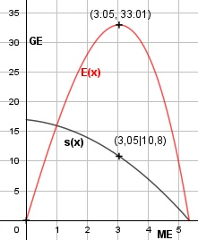

Aufgabe 89 Die Angebotspreisfunktion eines Produzenten lautet A(x) = 0,5x + 3 Die Nachfragepreisfunktion nach diesem Produkt lautet N(x) = - 0,5x2 + 20 Auf das Angebot erhebt der Staat die Steuern s. Welche Steuer sollte der Staat erheben, damit seine Einnahmen maximal sind aber Marktgleich- gewicht herrscht? Marktgleichgewicht A(x) = N(x) s = Steuer 0,5x + 3 + s = - 0,5x2 + 20 |-0,5x 3 + s = - 0,5x2 - 0,5x + 20 |-3 s(x) = - 0,5x2 - 0,5x + 17 Steuereinnahmen E(x): E(x) = s(x) * x E(x) = (-0,5x2 - 0,5x + 17) * x E(x) = -0,5x3 - 0,5x2 + 17x E'(x) = -1,5x2 - x + 17 E''(x) = -3x + 1 -1,5x2 - x + 17 = 0 |*(-1) 1,5x2 + x - 17 = 0 A, B, C - Formel: A = 1,5, B = 1, C = -17 x1,2 = x1,2 = x1,2 = -1 ± 10,15 x1,2 = ------------ 3 x1 = 3,05 E(3,05) = -0,5 * 3,053 - 0,5 * 3,052 + 17 * 3,05 E(3,05) = 33,01 GE x2 = -3,72 keine Lösung E''(3,05) = -3 * 3,05 + 1 < 0 --> Hochpunkt (3,05|33,01) s(3,05) = -0,5 * 3,053 - 0,5 * 3,052 + 17 s(3,05) = 10,8 GE/ME Der Staat sollte eine Steuer von 10,8 GE/ME erheben.
